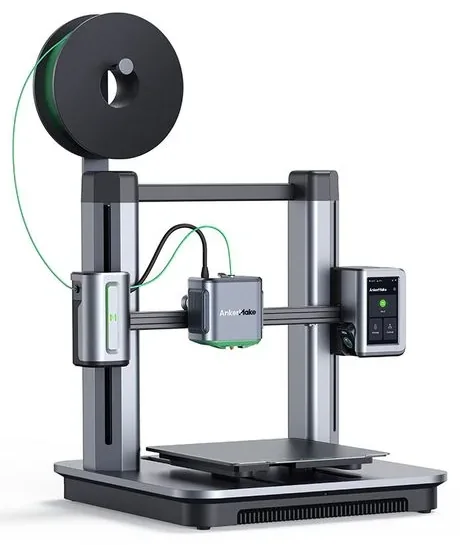

Build volume
235 x 235 x 250 mm
Advertised dimensions; check usable space and variants.
Sources & dates
- AnkerMake M5 technical data table · 2026-08 · vendor
- AnkerMake M5C review and spec summary (eufyMake) · 2026-08 · vendor
Bedslinger with an AI camera and 7x7 levelling, from Anker's since-rebranded 3D-printing line. Brand note: now eufyMake.

235 x 235 x 250 mm
Advertised dimensions; check usable space and variants.
Open frame
Published enclosure and chamber-heating notes.
Not recorded in this catalog.
Dated listing, not a live offer. Read the configuration and region.
Understand the hardware, explore compatible changes and find a diagnostic starting point when something goes wrong. Expand the specification sections for every recorded value, condition and original reference.
Dimensions, construction and the hardware that moves the print.
| Property and unit | Published value and conditions | Sources and dates |
|---|---|---|
| Manufacturer & exact marketed model name (verify the exact product identity first) | AnkerMake M5. AnkerMake has since been rebranded eufyMake, and ankermake.com now redirects to eufymake.com | 2 sources
|
| Variants & sibling models — and how to tell them apart (spec-contamination risk) | Paired with the cheaper M5C, which is smaller (220x220x250 vs 235x235x250), has a higher flow rate (35 vs 24 mm3/s) but no screen, no camera and no AI recognition. The M5's headline 500 mm/s is a high-speed-mode figure; its default is 250 mm/s | 3 sources
|
| Market position: superseded? successor announced? | 3DJake lists the M5 as sold out and no longer stocked. The brand has been folded into eufyMake | 2 sources
|
| Property and unit | Published value and conditions | Sources and dates |
|---|---|---|
| Build volume X×Y×Z (mm) — advertised vs actually usable | 235 x 235 x 250 mm | 2 sources
|
| Enclosure: open / enclosed; panel material; door/lid | Open frame | 1 source
|
| Property and unit | Published value and conditions | Sources and dates |
|---|---|---|
| Kinematics (bedslinger i3 / CoreXY / other) | Cartesian bedslinger | 1 source
|
| Property and unit | Published value and conditions | Sources and dates |
|---|---|---|
| Max print speed (claimed, mm/s) | 250 mm/s default; 500 mm/s in high-speed mode (manufacturer figures) | 1 source
|
| Max acceleration (claimed, mm/s²) | 5,000 mm/s2 in high-speed mode (manufacturer claim) | 1 source
|
| Max volumetric flow claimed (mm³/s) | 24 mm3/s (manufacturer claim) | 1 source
|
Extrusion, heating, leveling and material handling.
| Property and unit | Published value and conditions | Sources and dates |
|---|---|---|
| Type (direct drive / bowden) & design name | Direct-drive extruder | 1 source
|
Anker’s M5 troubleshooting checks spool tangles and feed resistance, then nozzle/extruder blockage and throat-fan operation. If extrusion repeatedly stops at the same height in the same file, it recommends re-slicing and testing Easy Mode before treating the fault as mechanical.
Applies to: AnkerMake M5 toolhead and AnkerMake Slicer workflow described by Anker Japan; use M5-specific cleaning instructions rather than the different M5C disassembly.
Anker documents replacing the M5 hotend and selecting the all-metal configuration in both the app and slicer. The 300 °C setting is conditional on installing that physical hotend; changing the software selector alone is not an upgrade.
Applies to: AnkerMake M5 with the official all-metal hotend. The M5C has a different toolhead and is not covered by this conversion.
Anker lists a 0.4 mm hardened-steel nozzle for abrasive filled filaments. This changes the wear surface; it does not raise the hotend, bed or material-processing limits of the underlying printer.
Applies to: Manufacturer explicitly lists M5 and M5C for nozzle V7120HA1. Retain the printer’s appropriate hotend profile and material limits.
| Property and unit | Published value and conditions | Sources and dates |
|---|---|---|
| Heater cartridge power (W) | 60 W heating block, quoted by AnkerMake as reaching 200 °C | 1 source
|
| Property and unit | Published value and conditions | Sources and dates |
|---|---|---|
| Bed surface (material, texture, coating), single/double-sided | Scratch-resistant PEI-coated magnetic build plate | 1 source
|
| Property and unit | Published value and conditions | Sources and dates |
|---|---|---|
| Auto bed leveling: probe technology (inductive / strain gauge / load cell / touch probe) | Automatic 7 x 7 levelling; probe technology not named | 1 source
|
| Mesh grid size (probe point count — firmware evidence) | 49 points (7 x 7) | 1 source
|
The creator supplies a single/double spool-holder arrangement and a 3MF file for the M5, intended to make manual color changes easier. It stores spools near the printer; it does not automate filament switching.
Applies to: AnkerMake M5 listing; no M5C compatibility or large-spool load capacity is established.
Firmware, controls, connections and calibration.
| Property and unit | Published value and conditions | Sources and dates |
|---|---|---|
| Display: size, type, touch? | 4.3-inch colour LCD touchscreen | 1 source
|
| WiFi (band/standard), Ethernet, USB ports, SD/flash-drive | Wi-Fi and USB-C | 1 source
|
| Camera: built-in / optional? Resolution & framerate (verify — marketing often omits real fps) | 1080p camera with AI recognition and time-lapse | 2 sources
|
| Property and unit | Published value and conditions | Sources and dates |
|---|---|---|
| Assembly level & time from unbox to first print | Assembly kit; AnkerMake quotes about 15 minutes | 1 source
|
Published safeguards, support terms and independent evidence.
| Property and unit | Published value and conditions | Sources and dates |
|---|---|---|
| Dimensional accuracy measurements (third-party, with numbers) | Print accuracy quoted at 0.1 mm (manufacturer specification, not an independent measurement) | 1 source
|
This guide presents the catalog’s sourced record for this exact model. Source dates belong to each reference; a page update does not mean every specification has been rechecked.
Prices are dated listing snapshots, with configuration, regional and sale conditions. They are not current offers. Unknown values remain unfilled.
Firmware, variants and available accessories can change. Read the original reference before making a purchase or planning a process.
Firmware, modifications and troubleshooting links are checked against the model and stated hardware or firmware revision. A creator’s compatibility claim is not a fit test by this site. Official troubleshooting describes a diagnostic route; individual reports do not establish a failure rate.
This review did not verify firmware customization or update guidance for this exact model. That is a research gap, not a claim that none exist.